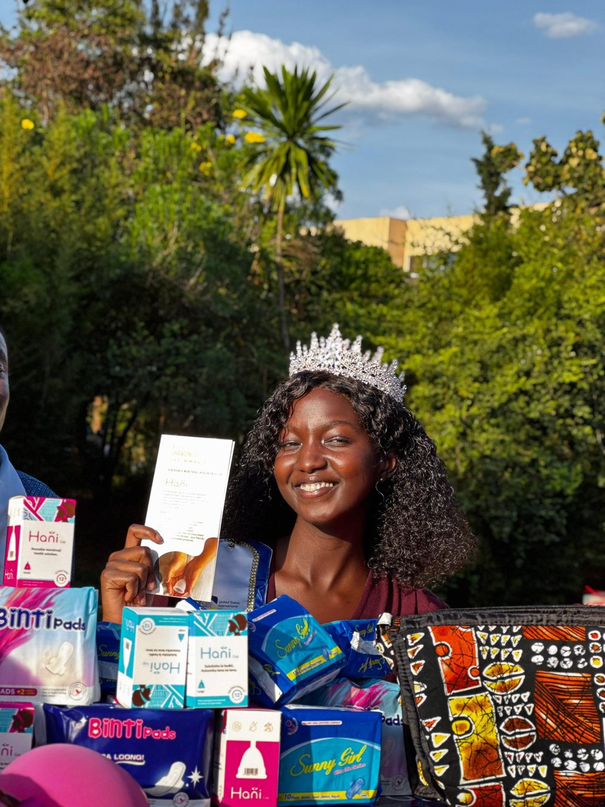

We are a grassroots, youth-led social venture providing reusable sanitary pads and menstrual health education to girls in Kakuma refugee camp and underserved communities across South Sudan. Our initiative was born out of a simple but urgent need, too many girls are forced to stay home from school during their periods due to lack of access to safe, affordable hygiene products.
Our solution is practical, sustainable and scalable:
We produce eco-friendly, washable pads that last up to 12 months.
We partner with local women and tailors to make and distribute them.
We empower girls with menstrual education, reducing stigma and promoting confidence.
With just $5, we can support one girl with a full-year menstrual hygiene kit and with your help, we’re scaling this impact across classrooms and communities.
Join us as we break the cycle of period poverty and create a world where every girl can thrive, Not Charity But Justice!.
